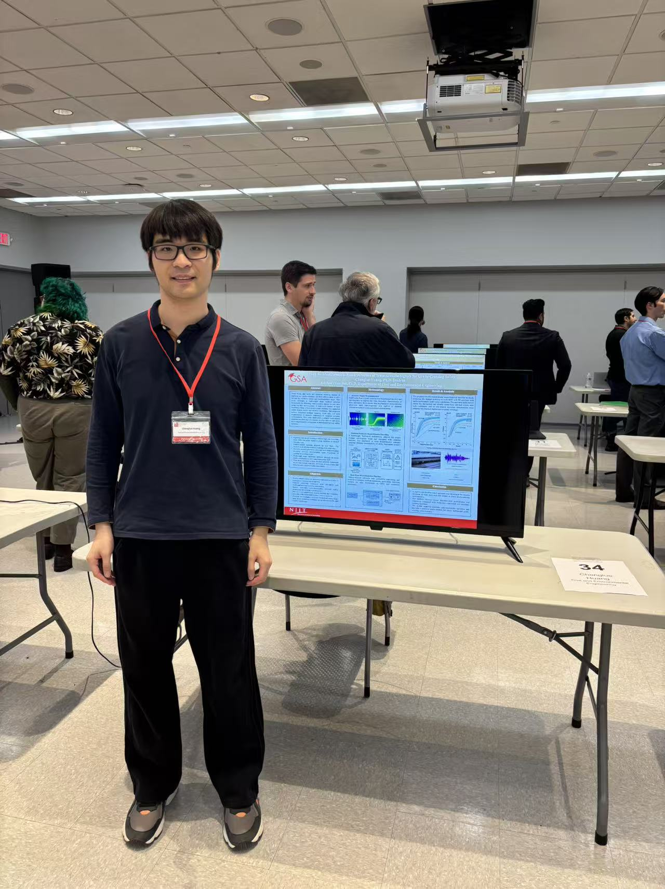
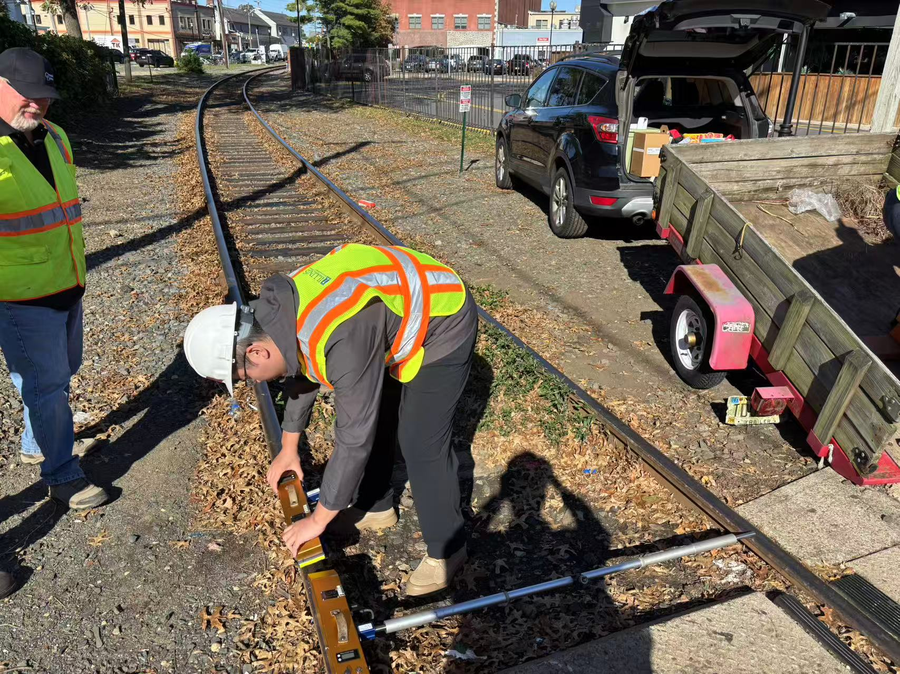

📅 December 2, 2025
Prof. Yun Bai delivered the Bruce Podwal Seminar at CCNY, sharing an integrated framework for risk-based highway transportation infrastructure management that unites quantitative risk analysis with economic impact analysis to guide maintenance and investment decisions. Drawing on a U.S. Virgin Islands case study that considers coastal flooding and sea level rise, the talk highlighted how bidirectional feedback between routine asset management and extreme-event risk mitigation can prioritize projects, quantify resilience benefits, and support capital planning for transportation agencies operating under fiscal constraints. The seminar further discussed translating analytical outputs into decision-support tools, enabling agencies to compare resilience strategies, justify funding, and design scalable practices applicable across diverse infrastructure networks and hazard profiles.
📅 November 2025

Poster: Deep Residual Network-Based Detection of Train Acoustic Warning Signals
PhD Student Chenglue Huang presented a poster at the NJIT Graduate Student Association forum, showcasing a lightweight, customized ResNet for real-time detection of train horns and bells. The work addresses a key gap in rail-grade crossing safety: acoustic warnings often provide the earliest signal when visibility is poor, yet legacy detectors struggle with short, high-noise events. Trained on 900+ hours of field audio from the Greater Boston area, the model leverages log–mel spectrograms, focal loss, and SpecAugment to stay robust amid traffic, crowd noise, and weather. By enabling low-latency, edge-ready acoustic sensing, the approach complements camera-based systems and strengthens multimodal monitoring for rail safety and intelligent infrastructure.
📅 October 2025

INTIS Lab is collaborating with Rutgers CAIT on a rail track inspection initiative headquartered at 18 Throckmorton St, Freehold, NJ 07728. The team is deploying multi-sensor data collection (vision, vibration, and acoustic sensing) alongside AI-driven defect detection to assess rail integrity, joint conditions, and ballast health.
The project will produce a repeatable inspection workflow that fuses field data with historical maintenance logs to prioritize interventions, reduce inspection cycles, and inform capital planning. Early pilots are guiding a scalable toolkit for agencies to enhance safety, resilience, and cost-effective maintenance across regional rail corridors.
📅 February 4, 2025
We proudly announce the establishment of the Intelligent Transportation Lab (INTR Lab), a pioneering research center dedicated to advancing the future of smart mobility and transportation infrastructure at NJIT.
This state-of-the-art laboratory integrates artificial intelligence, machine learning, and big data analytics into real-world transportation systems, fostering safer, more efficient, and sustainable mobility solutions.
The launch of the INTR Lab marks a significant milestone in NJIT’s commitment to shaping the future of intelligent transportation. Collaborations with academia, government, and industry partners will drive groundbreaking research and real-world applications in mobility solutions.
Stay tuned for upcoming research initiatives, partnerships, and opportunities to join this transformative journey.
Welcome to the future of transportation innovation at NJIT!